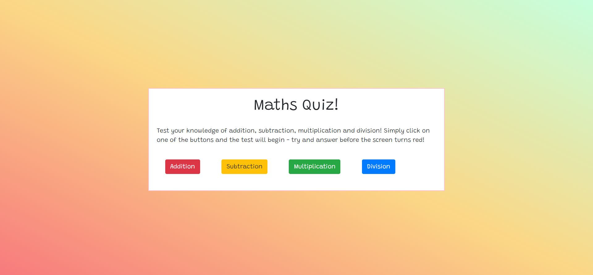

Projects
Dungeons & Dragons Generator

Website built to provides users with an easy way to generate random events and dice rolls for the game Dungeons and Dragons. With dice rolls, the user can choose between rolling 1-10 d4,d6,d8,d10,d12 or d20s. Built with HTML, CSS and JavaScript.
Demo CodeMaths Quiz
Quiz website which uses randomly generated numbers to test maths skills. Includes a background which changes colour from green to red to encourage users to answer quickly. Built with HTML, CSS, Bootstrap and JavaScript.
Demo Code